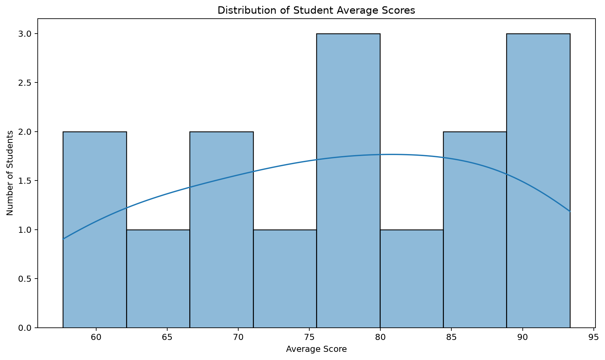
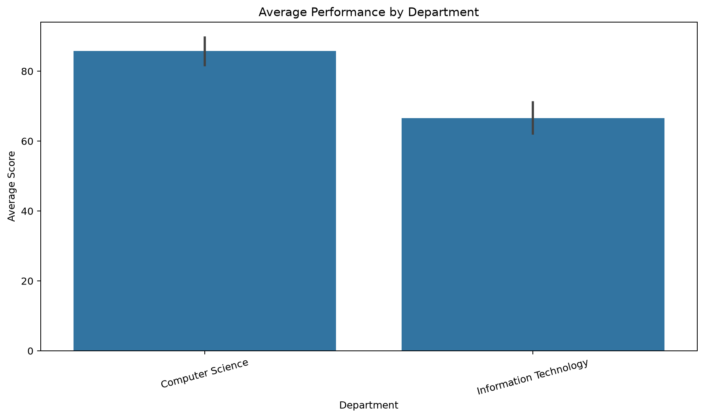
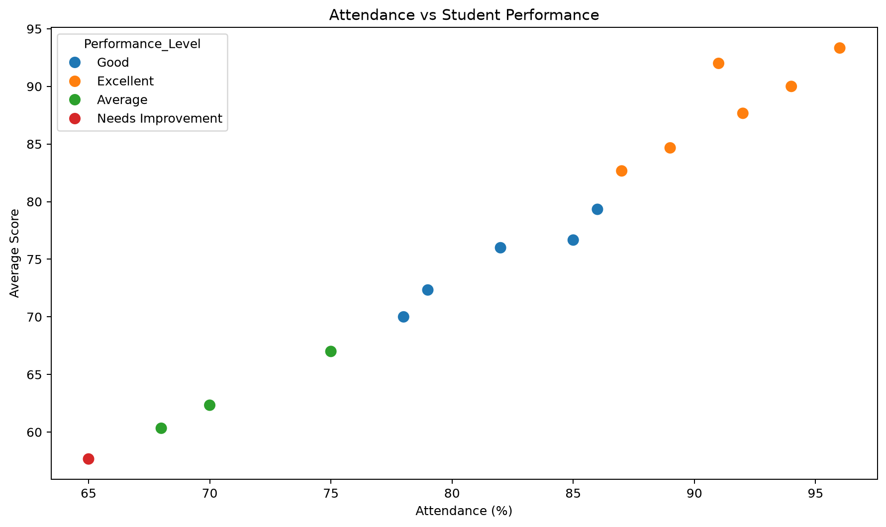
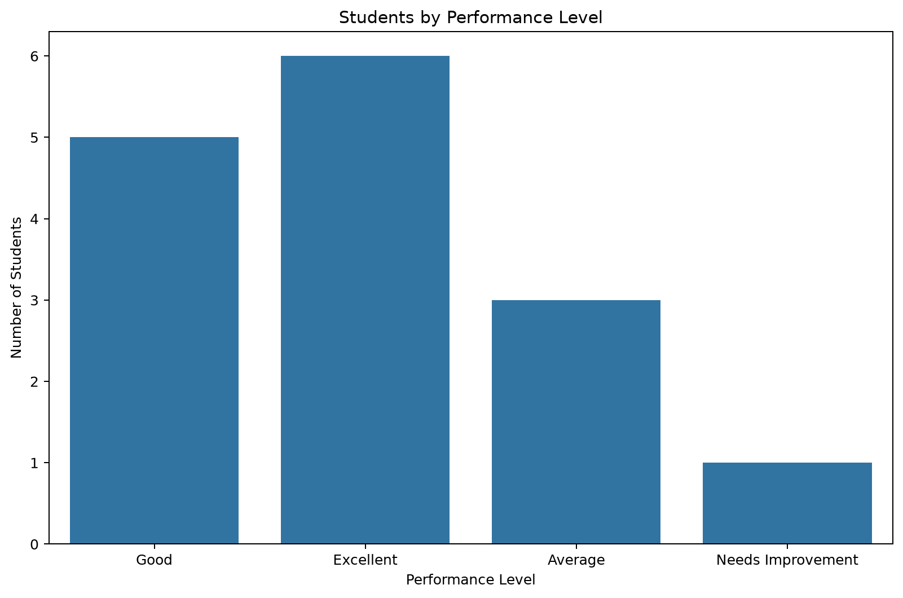
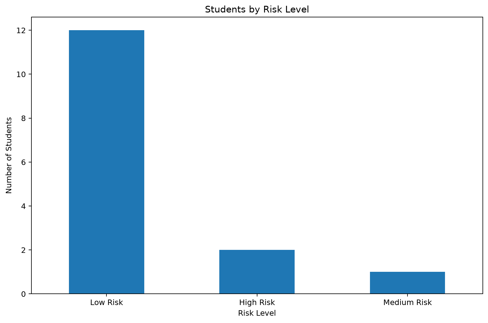

Average score
76.8
out of 100
Executive intelligence report
A decision-ready view of achievement, engagement, and intervention opportunities across the student dataset.
Average score
76.8
out of 100
Average attendance
82.5%
engagement signal
High-risk students
2
priority intervention
Study-hour correlation
0.99
with average score
| ID | Student | Score |
|---|---|---|
| S004 | Ann | 93.3 |
| S012 | Lucy | 92.0 |
| S008 | Linda | 90.0 |
| S002 | Mary | 87.7 |
| S006 | Sarah | 84.7 |
| Average Score | |
|---|---|
| Department | |
| Computer Science | 85.79 |
| Information Technology | 66.52 |
| Student_ID | Name | Average_Score | Attendance | Study_Hours | Risk_Level | Risk_Reason |
|---|---|---|---|---|---|---|
| S003 | Peter | 62.3 | 70.0 | 8.0 | Medium Risk | Low Attendance |
| S007 | James | 57.7 | 65.0 | 6.0 | High Risk | Low Academic Score, Low Attendance, Low Study Hours |
| S013 | Mark | 60.3 | 68.0 | 7.0 | High Risk | Low Attendance, Low Study Hours |




